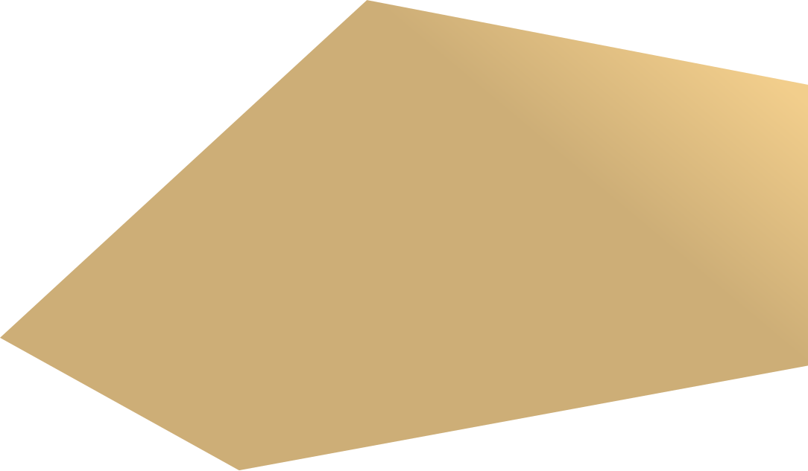
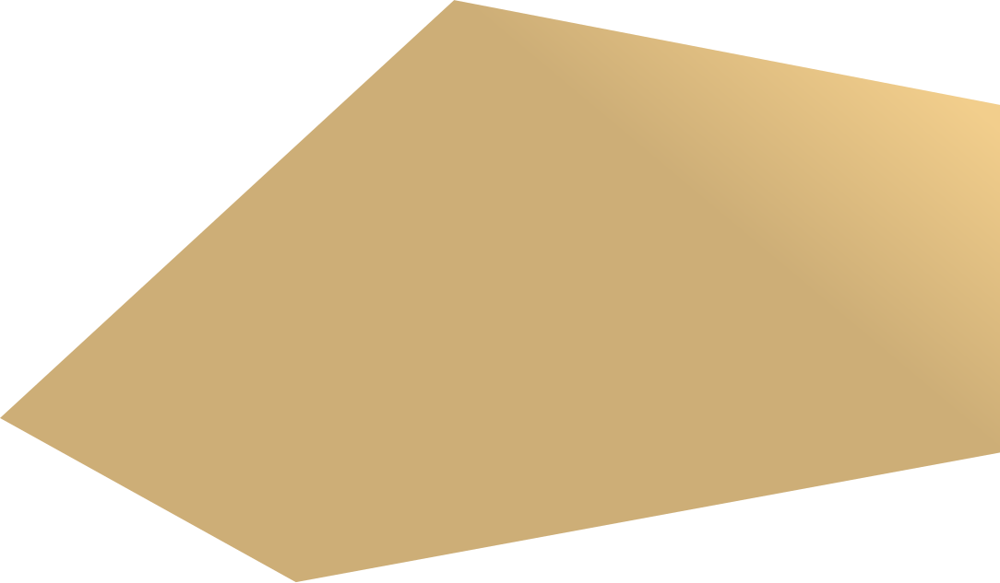

Константин Александрович
БЕЙРИТ
Уважаемые акционеры, инвесторы
и партнеры ПАО «Селигдар»!
Инвестиционные проекты, воспроизводство и расширение ресурсной базы, повышение экономической эффективности производственных процессов, ориентация на постоянный рост бизнеса и акционерной стоимости, устойчивое развитие – приоритетные направления деятельно- сти Холдинга.
В 2022 году ПАО «Селигдар» удалось выполнить основные поставленные цели в рамках текущей стратегии развития и добиться приемлемых результатов. Несмотря на экономические сдвиги и ограничения, нами установлен новый рекорд по производству золота – более 7,5 т, на 6% больше уровня 2021 года.
В период сложной экономической ситуации и волатильности национальной валюты в прошедшем году золотодобывающая отрасль продолжила развиваться. «Селигдар» занимается золотодобычей уже 47 лет, и за это время в оте- чественной истории происходил не один период турбулентности, однако компания была и остается оплотом стабильности для своих инвесторов, акционеров, партнеров и сотрудников. «Селигдар» и «Русолово» вошли в десятку лучших работодателей рейтинга РБК среди горнодобыва- ющих предприятий, а также вошли в рэнкинг РБК 100 крупнейших публичных компаний по объему торгов.
Количество счетов акционеров в 2022 году превысило 70 тысяч. Значимым событием для компании стало успешное размещение облигаций на 10 млрд руб. на Московской бирже в конце прошлого года. Мы очень ценим высокое доверие, оказанное нам со стороны инвестиционного сообщества. Компания получила большое коли- чество заявок от институциональных и частных инвесторов. В 2023 году мы предлагаем новый для российского рынка инструмент и выпускаем «золотые» облигации.
Внушают оптимизм и другие направления деятельности Холдинга. Производство стратегического сырья для России – олова в концентрате – в 2022 году составило 2,9 тыс. т. Производство вольфрама в концентрате увеличи- лось на 72% по сравнению с 2021 годом и достигло 81 т. Производство меди в концентрате увеличилось в 2,5 раза до 916 т.
В 2022 году в «Селигдаре» увеличена мощность золотоизвлекательной фабрики на месторождении Рябиновое в Якутии, проведена реконструкция фабрики на производственном комплексе Сининда в Бурятии, введена в опытно-промышленную эксплуатацию фабрика по переработке скарно- вых руд на производственном комплексе Поиск в Алтайском крае. В г. Алдане построен новый автоматизированный лабораторный комплекс, крупнейший на территории республики. Проект строительства золотоизвлекательной фабрики на месторождении Хвойное в Якутии перешел в активную фазу. В конце 2024 года начнутся пуско-наладочные работы, вывод фабрики на проектную мощность в 3 млн т руды в год запланирован на 2025 год. Отдельно отмечу нашу работу на месторождении Кючус. По итогу 2022 года мы выполнили более половины двухлетней программы геологораз- ведочных работ, приступили ко второму этапу работ – исследованию минералогического состава и обогатимости руд. В январе было подписано соглашение о поставке энергии атомной генера- ции для разработки месторождения, что позволит в будущем обеспечить электроэнергией производ- ственный комплекс на месторождении Кючус. В оловодобывающем дивизионе начаты подгото- вительные работы по созданию металлургического производства полного цикла в Хабаровском крае, которое позволит в будущем диверсифицировать производственную деятельность компании. На месторождении Пыркакайские штокверки про- изведен отбор проб. Материалы направлены на дальнейшее исследование. В 2022 году повестка устойчивого развития оставалась приоритетной. Был реализован большой комплекс мероприятий по экологии, корпоративному управлению, социальной ответ- ственности бизнеса. Оба дивизиона Холдинга подписали соглашения с Росприроднадзором о консультировании при реализации инвестици- онных проектов. На производственном комплексе Солнечный была запущена в тестовую эксплуа- тацию собственная лаборатория биологического тестирования. Результаты работы «Селигдара» в области устойчивого развития были отмечены экспертами как включением Холдинга, так и улучшением его позиций в рейтингах и рэнкингах устойчивого развития. Выполнение текущей стратегии заложило фунда- мент для разработки новой стратегии развития Холдинга до 2030 года, в которой поставлены масштабные цели. В 2023 году «Селигдар» продолжит планомерную работу по повышению экономической эффек- тивности производственных процессов, для чего менеджмент Холдинга будет выявлять и реализовы- вать все имеющиеся резервы.
Внушают оптимизм и другие направления деятельности Холдинга. Производство стратегического сырья для России – олова в концентрате – в 2022 году составило 2,9 тыс. т. Производство вольфрама в концентрате увеличи- лось на 72% по сравнению с 2021 годом и достигло 81 т. Производство меди в концентрате увеличилось в 2,5 раза до 916 т.
В 2022 году в «Селигдаре» увеличена мощность золотоизвлекательной фабрики на месторождении Рябиновое в Якутии, проведена реконструкция фабрики на производственном комплексе Сининда в Бурятии, введена в опытно-промышленную эксплуатацию фабрика по переработке скарно- вых руд на производственном комплексе Поиск в Алтайском крае. В г. Алдане построен новый автоматизированный лабораторный комплекс, крупнейший на территории республики. Проект строительства золотоизвлекательной фабрики на месторождении Хвойное в Якутии перешел в активную фазу. В конце 2024 года начнутся пуско-наладочные работы, вывод фабрики на проектную мощность в 3 млн т руды в год запланирован на 2025 год. Отдельно отмечу нашу работу на месторождении Кючус. По итогу 2022 года мы выполнили более половины двухлетней программы геологораз- ведочных работ, приступили ко второму этапу работ – исследованию минера